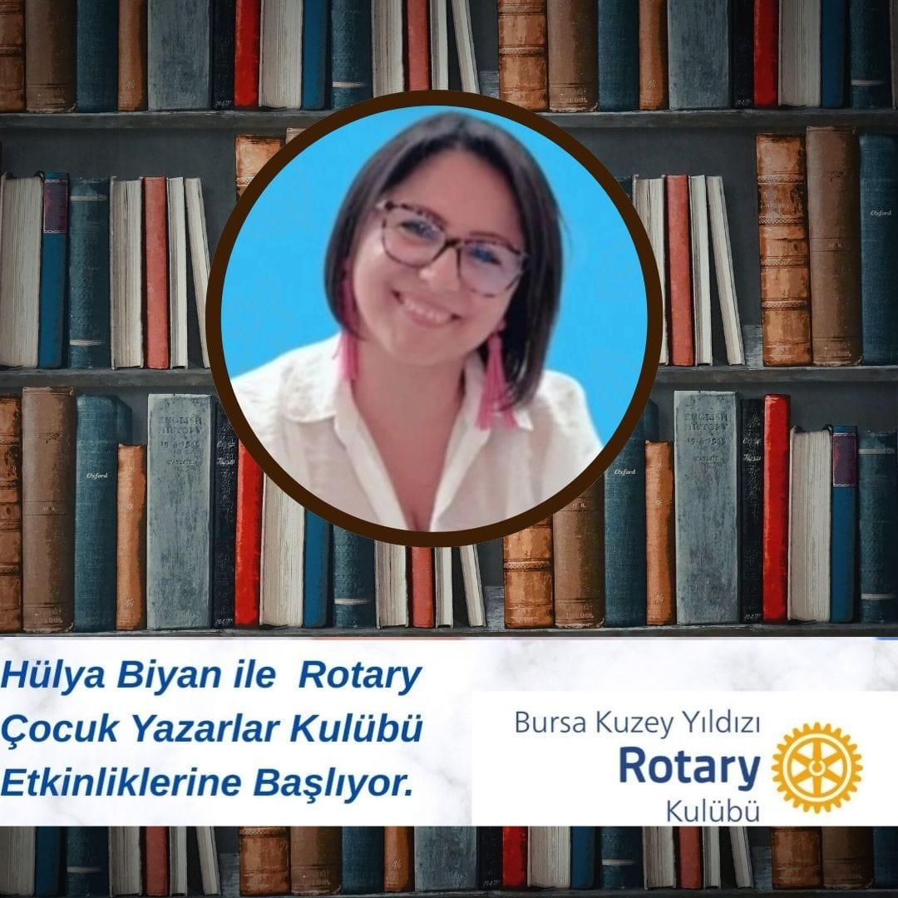
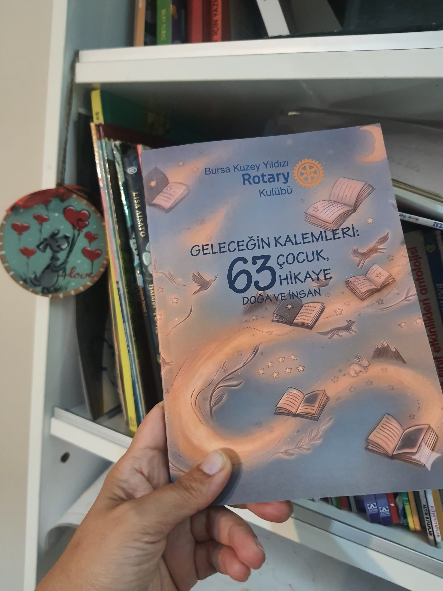
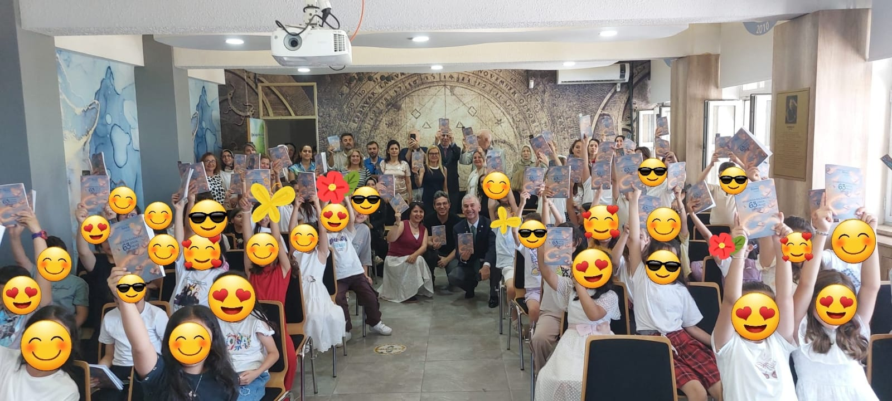
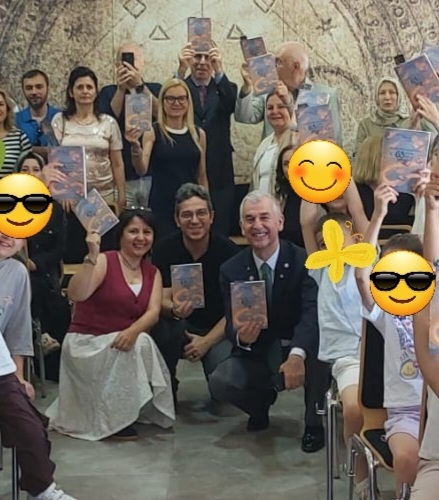
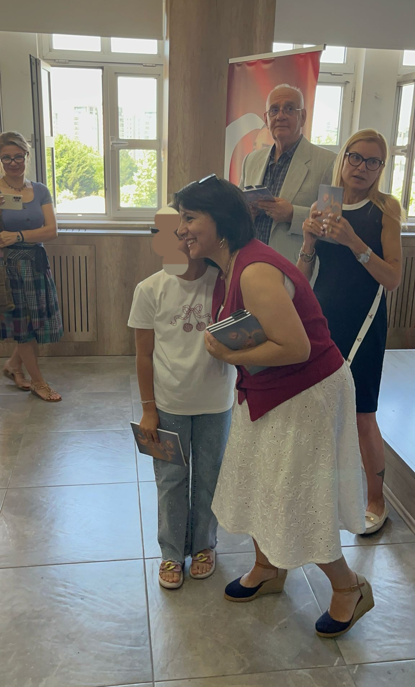
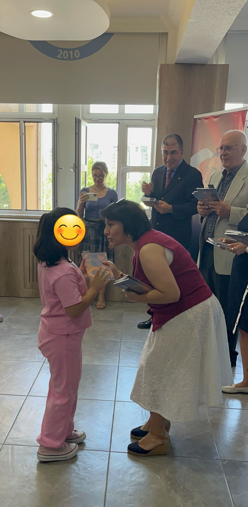
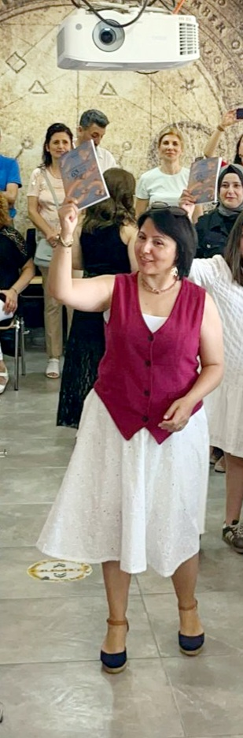

63 çocuk, 63 hikâye… ve bir kitap
Bursa Kuzey Yıldızı Rotary Kulübü'nün bir projesi olan Rotary Çocuk Yazarlar Kulübü, Rotary'nin “Temel Eğitim ve Okuryazarlık” odağı kapsamında hayata geçti. Eğitmenliğini üstlendiğim bu projede çocuklara yazma sevgisini aşıladık ve hayal güçlerini somut bir esere — kendi kitaplarına — dönüştürdük.
Bir dizi atölyede çocuklar kendi hikâyelerini kaleme aldı. Küçük bir editör ekibi gibi cümleleri birlikte kurduk, geliştirdik ve yeniden şekillendirdik. Süreç, 63 çocuğun yazdığı 63 hikâyenin tek bir kitapta buluşmasıyla taçlandı.
Nasıl ilerledi?
Hayal ve İlham
“Yazar kime denir?” Çocuklarla hayal kurmayı, merak etmeyi ve kelimelerle oynamayı keşfettik.
Yazma ve Düzeltme
Her çocuk kendi hikâyesini yazdı; buluşmalarda birlikte okuduk, geliştirdik ve son hâlini verdik.
Kitap Oldu
Hikâyeler tek bir kitapta toplandı ve düzenlenen törenle çocuklara kendi kitapları teslim edildi.

Geleceğin Kalemleri: 63 Çocuk, 63 Hikâye
Kitap adı: Doğa ve İnsan
Çocukların tamamen kendi hayal güçleriyle yazdığı hikâyelerden oluşan bu kitap, “Doğa ve İnsan” temasıyla hayat buldu. Her sayfa, bir çocuğun cesaretini ve hayal gücünü ömür boyu gururla anlatacağı bir başarıya dönüştü.
“Hayaller kitap oldu, gözlerdeki ışıltı geleceğe umut oldu.”
25 Haziran 2026 — çocuklarımız kendi kitaplarını gururla ellerine aldı.
Teslim Töreninden Kareler
Çocukların özel gününden unutulmaz anlar. (Çocukların yüzleri gizlilik için düzenlenmiştir.)





🎬 Törenden bir an
Çocukların heyecanını ve o özel atmosferi kısa bir videoda izleyin.
🙏 Teşekkür
Bu güzel projeye beni de dahil ettikleri için öncelikle Bursa Kuzey Yıldızı Rotary Kulübü ailesine yürekten teşekkür ederim. Emeği geçen değerli isimlere de minnettarım:
- Dönem Başkanı Burak Bozkaya'ya
- Okul Müdürü Harun Kızık'a — bize bu fırsatı sağladığı için
- Ve en çok, 63 küçük yazarımıza — hayallerini kelimelere döktükleri için 💛